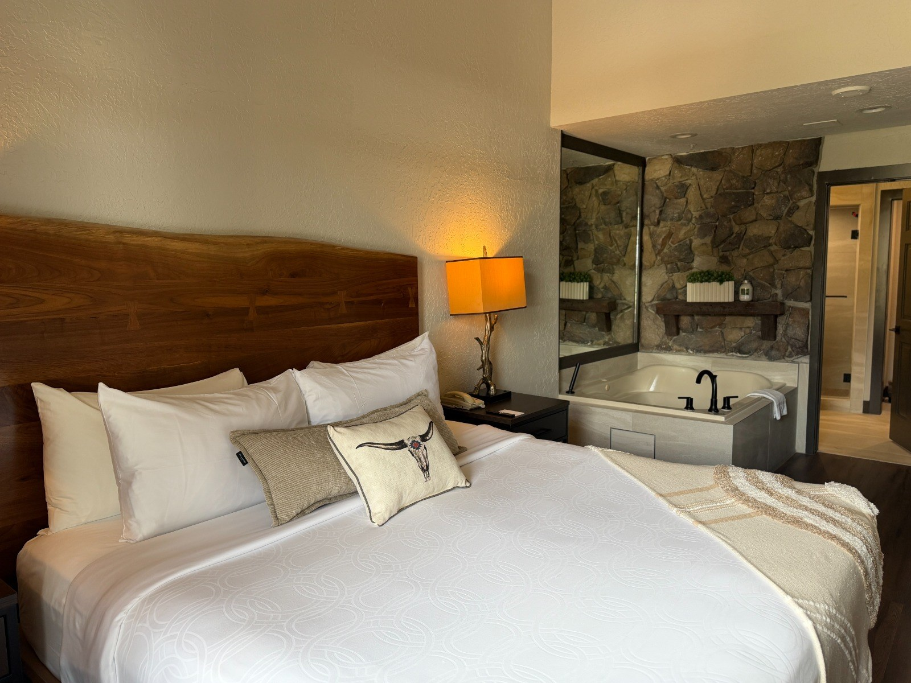

A group of twenty-four is too large for one ski-in villa and too small to book a hotel wing. Three two-bedroom villas in one Canyons Village building hold eight guests each, with separate full kitchens and a shared building entrance. Here is how the holiday week works for a group that size — the Epic Local blackout dates, the dining gaps, and the Utah liquor store rules that catch people off guard on Christmas Day.

How three villas become one trip
The two-bedroom villa at Westgate Park City Resort sleeps up to eight: two king bedrooms and two queen sleeper sofas. Three villas give a group of twenty-four accommodation in one building, stacked on three floors with a common entrance. Each unit runs its own door code independently, and the shared building entrance allows easy movement between floors.
The floor plan is consistent across all three units — every villa has the same two kings, two queens, two bathrooms, and full kitchen. The floor plan page shows how the space divides, and the group rental guide covers how groups have used the three-villa arrangement in practice.
The holiday calendar on the mountain
Christmas week and New Year’s Eve are the two busiest periods on the Park City Mountain calendar. The mountain operates a full lift complement through the holiday period, with the opening-day roster expanding as the season builds. For the 2026–27 season, Park City Mountain opened on 25 November; the Christmas availability guide tracks what is still open in the village for the week itself.
New Year’s Eve at Canyons Village traditionally includes fireworks from the base area; for a group, the base area gets crowded that evening and the last gondola from the fireworks location can have a long queue. The New Year’s 2027 at Park City guide has event details as they are confirmed.
Epic Local Pass blackouts for Christmas week and New Year’s
This is the detail that trips up groups every year. The Epic Local Pass — the lower-priced tier of the Epic Pass — has blackout dates that cover almost all of Christmas week at Park City Mountain. For the 2026–27 season, the blackout window runs from 26 December through 31 December 2026. Christmas Day, 25 December, is not blacked out. New Year’s Day, 1 January 2027, is also not blacked out.
| Date | Day | Epic Local access | Note |
|---|---|---|---|
| Dec 25 | Thursday | Valid | Christmas Day — not blacked out |
| Dec 26 | Friday | Blacked out | Blackout begins |
| Dec 27 | Saturday | Blacked out | — |
| Dec 28 | Sunday | Blacked out | — |
| Dec 29 | Monday | Blacked out | — |
| Dec 30 | Tuesday | Blacked out | — |
| Dec 31 | Wednesday | Blacked out | Blackout ends |
| Jan 1 | Thursday | Valid | New Year’s Day — not blacked out |
For a group of twenty-four, the pass mix matters. If some members hold full Epic Passes and others hold Epic Local, everyone can ski Christmas Day together without any lift ticket purchase. But on December 26 through 31, the Epic Local holders will need single-day lift tickets. Those tickets are priced dynamically and are significantly more expensive when purchased at the window on a holiday day. The lift ticket cost guide has the current pricing picture. Note that Epic Pass sales for the 2026–27 season close on 6 December 2026; anyone who does not purchase before that date will be buying day tickets for the entire holiday week.
Where a group of twenty-four eats in the village
Canyons Village has several restaurants within walking distance: The Farm at Canyons Village, Red Tail Grill, KITA, Dos Olas, and Escala Provisions. The range covers everything from a quick lunch to a full sit-down dinner. What none of them does reliably is seat twenty-four people together at a standard reservation. The Farm takes groups up to twelve online; groups above that size typically require a private dining arrangement or a private event booking made well in advance. Red Tail Grill has a private dining room reservable through its Tock listing for larger parties.
Most groups split into smaller tables and book them at the same time — Christmas week bookings at Canyons Village typically fill weeks in advance. Many groups also plan communal dinners in the villa, which makes the arrival-day grocery run worth organising before you leave home.
Grocery shopping and Utah’s alcohol rules over the holidays
The two nearest grocery stores are Smith’s at Kimball Junction, about three miles from Canyons Village, and a Whole Foods in the same area. Both carry a full grocery range. What they do not carry is wine or spirits — Utah grocery stores are limited to beer at or below 5 percent ABV. Wine, spirits, and stronger beers come only from Utah state liquor stores. The nearest state store is in Park City at 1500 Kearns Boulevard.
Utah state liquor stores are closed on Sundays and on state and federal holidays. For a Christmas-week group, the closed days are Thursday 25 December, Sunday 27 December, and Thursday 1 January 2027. A group arriving on or before 24 December should do the wine and spirits run that day; a New Year’s group should stock up no later than 30 December.
Coordinating arrivals, keys, and the first morning
Three villas mean three separate check-in processes. Westgate handles check-in for each unit individually. For a group of twenty-four arriving from multiple locations, it helps to stagger arrival windows so the front desk is not handling all three units at once. Designate a point person for each villa and share building entrance and parking information before arrival — the Canyons Village parking structure has limited visitor parking, and the holiday period is the busiest week of the year.
The first ski morning is where group trips at scale typically lose time. The group villa logistics guide gives a detailed rundown of how to coordinate twenty-four people across three sets of keys; the peak-week booking guide shows how Christmas and New Year’s compare on the booking timeline.
The villa is not available over Christmas or New Year’s
Christmas week 2026 and New Year’s 2027 are not open. For a group of twenty-four planning a 2027 ski trip, two weeks are available: Presidents’ Week, 13–20 February 2027, and spring break, 21–28 March 2027. Both are peak season with full terrain, and both fall outside the Epic Local Pass blackout window.
Common questions
Can a group of 24 all stay together at Canyons Village?
Yes, with three two-bedroom villas in the same building. Each villa sleeps eight guests: two king bedrooms and two queen sleeper sofas. Three villas give a group of twenty-four shared accommodation in one building, each unit with its own full kitchen, two bathrooms, and a private entrance. The building has a common entrance and the three villas are stacked vertically, one per floor.
What are the Epic Local Pass blackout dates over Christmas and New Year’s at Park City?
The Epic Local Pass blackout dates that cover the holiday period at Park City Mountain are December 26 through December 31, 2026. Christmas Day itself, December 25, is not blacked out. January 1, 2027 is also not blacked out. If your group holds Epic Local Passes and plans to ski December 26 through 31, you will need single-day lift tickets for those dates. The full Epic Pass has no blackout dates at Park City.
Are restaurants in Canyons Village open on Christmas Day?
Most Canyons Village restaurants are open on Christmas Day, including The Farm, Red Tail Grill, and KITA. Hours may differ from the standard ski-day schedule, and holiday menus are common. Reservations for Christmas Day dinner are typically essential weeks in advance. Call directly or check the restaurant’s website for 2026 holiday hours; published hours from prior years do not carry over reliably.
Can a group buy wine and spirits at the grocery store in Utah?
No. Utah grocery stores sell beer up to 5 percent ABV only. Wine and spirits are sold exclusively at Utah state liquor stores. State liquor stores are closed on Sundays and on state and federal holidays. For a holiday group, the relevant closures are Christmas Day (Friday, December 25, 2026), Sunday December 27, and New Year’s Day (Friday, January 1, 2027). Plan the wine and spirits run on a day before the closures.
Is the villa available for Christmas week 2026 or New Year’s 2027?
No. The villa is not available for Christmas week 2026 or New Year’s 2027. Available dates for the 2026–27 season are Presidents’ Week, February 13–20, 2027, and spring break, March 21–28, 2027. For more information about those dates, see the available weeks page.